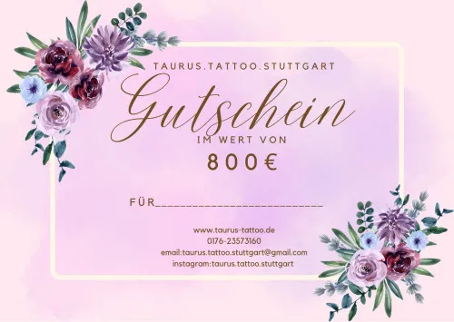

Tattoo-Gutscheine für Stuttgart im Wert von 50€ bis 800€
Produktprofil · Marktplatz-Daten 2026-10-14 · Verkaufsseiten-Recherche 2026-10-14 · Kategorien: Fashion
- Tattoo-Gutscheine für Stuttgart im Wert von 50€ bis 800€ ist ein/e In-person service in Fashion, vertrieben über den Digistore24-Marktplatz von Anbieter TaurusTattooStuttgart, gelistet seit 2023-08-15.
- Listenpreis $140.57 (single payment) — Checkout, Auslieferung und Rückerstattungen laufen über Digistore24 selbst, nicht über den Anbieter.
- Käuferschutz: keine standardisierte Garantie-Formulierung gefunden — Rückerstattungsbedingungen vor der Zahlung auf der offiziellen Seite prüfen.
Interesse an Tattoo-Gutscheine für Stuttgart im Wert von 50€ bis 800€? Aktueller Preis, Boni und Garantiebedingungen finden Sie auf der offiziellen Seite des Anbieters:
Offizielle Verkaufsseite ansehen
Affiliate-Link (Werbung) — wir verdienen ggf. eine Provision, ohne Mehrkosten für Sie.

Marktplatz-Daten
| Produkttyp | In-person service |
|---|---|
| Preis | $140.57 (Single payment) |
| Garantie/Rückgabe | Laut Verkaufsseite des Anbieters — vor dem Kauf auf der offiziellen Seite prüfen |
| Anbieter | TaurusTattooStuttgart (gelistet seit 2023-08-15) |
Marktplatz-Beschreibung des Anbieters
Tattoo-Gutscheine sind das perfekte Geschenk für anstehende Tattoo Projekte. Jetzt die Gutscheine weiterempfehlen und weitere Kunstwerke schaffen. www.taurus-tattoo.de
Von der Verkaufsseite des Anbieters
Seitentitel: Taurus Tattoo Stuttgart Gutschein im Wert von 800€ - Digistore24
Abschnitts-Überschriften
- Taurus Tattoo Stuttgart Gutschein im Wert von 800€
- Taurus Tattoo Stuttgart Gutschein im Wert von 800€
- Taurus Tattoo Stuttgart Gutschein im Wert von 800€
Einstiegstext
Der Tattoo-Gutschein ist das perfekte Geschenk für (d)ein anstehendes Tattoos Projekt. Jetzt den Gutschein kaufen und in wenigen Minuten online erhalten.
1x Taurus Tattoo Stuttgart Gutschein im Wert von 800€ Sie erhalten die Dienstleistung, die bei Ihnen vor Ort erbracht wird
Verkäufer und Vertragspartner ist Digistore24 GmbH. Es gelten unsere Allgemeinen Geschäftsbedingungen und unsere Widerrufsbelehrung .
Preisangaben auf der Seite: $10
Recherche-Methode: rohes HTML · 320 Wörter · Qualität: medium · recherchiert am 2026-10-14. Vollständige Recherche-Datei (MD) ↗
Weitere Bilder (von der Verkaufsseite des Anbieters)

Bilder stammen von der offiziellen Verkaufsseite des Anbieters und zeigen das Produkt, wie es beworben wird.
Gut zu wissen
- Keine Garantie-Formulierung in unserer Recherche gefunden — bestätigen Sie das Rückgabefenster auf der offiziellen Seite, bevor Sie kaufen.
Was ist Tattoo-Gutscheine für Stuttgart im Wert von 50€ bis 800€?
Tattoo-Gutscheine für Stuttgart im Wert von 50€ bis 800€ ist ein/e in-person service in der Kategorie Mode des Digistore24-Marktplatzes, veröffentlicht von Anbieter TaurusTattooStuttgart und im Verkauf seit 2023-08-15. Der Anbieter beschreibt es so: "Tattoo-Gutscheine sind das perfekte Geschenk für anstehende Tattoo Projekte. Jetzt die Gutscheine weiterempfehlen und weitere Kunstwerke schaffen. www.taurus-tattoo.de" (Marktplatz-Beschreibung des Anbieters, leicht gekürzt).
Tattoo-Gutscheine für Stuttgart im Wert von 50€ bis 800€ Preis: was Sie zahlen
Der Marktplatz listet Tattoo-Gutscheine für Stuttgart im Wert von 50€ bis 800€ zum $140.57 Preis (single payment). Digistore24 fügt im Checkout die gesetzliche Steuer Ihres Landes hinzu — dort sehen Sie den Endbetrag vor der Zahlung. Die Verkaufsseite selbst nennt: $10 (Anbieteraussagen — verbindlich ist der Checkout-Betrag). Eine separate Plattformgebühr gibt es nicht; Anbieter können eigene Upsells nach dem Checkout anbieten.
Tattoo-Gutscheine für Stuttgart im Wert von 50€ bis 800€ Rückerstattung und Geld-zurück-Garantie
Wir haben keine standardisierte Garantie-Formulierung auf der Verkaufsseite gefunden. Rückerstattungen für Digistore24-Käufe laufen über die Plattform: Antrag über den Support-Link in Ihrer Bestell-E-Mail, innerhalb des Garantiezeitfensters, das im Checkout angezeigt wird. Praktischer Rat: Entscheiden Sie innerhalb des Fensters — wenn das Produkt unter den Erwartungen bleibt, erstatten lassen statt irren lassen.
Mechanik im Detail: So funktionieren Digistore24-Rückerstattungen.
Für wen ist Tattoo-Gutscheine für Stuttgart im Wert von 50€ bis 800€ geeignet?
Basierend auf der Mode-Einordnung und der single payment-Abrechnung richtet sich Tattoo-Gutscheine für Stuttgart im Wert von 50€ bis 800€ an Käufer, die mode-Lösungen suchen und ein Budget für einen Premium-Kauf eingeplant haben. Der ehrliche Test ist nicht die Kategorie, sondern Ihre eigene Situation: Werden Sie es realistisch innerhalb des Garantiefensters nutzen? Wenn ja, ist der Preis eine Investition; wenn nein, ist er Ballast — unabhängig von der Qualität.
Ist Tattoo-Gutscheine für Stuttgart im Wert von 50€ bis 800€ seriös? Was Sie vor dem Kauf prüfen
Wir bewerten keine Seriosität — das kann niemand, ohne das Produkt zu nutzen. Prüfbare Punkte, alle auf dieser Seite: die Marktplatz-Historie des Anbieters (im Verkauf seit 2023-08-15), die wörtlichen Verkaufsseiten-Auszüge unten (gekennzeichnet als Anbieteraussagen — deren Werbung, nicht unsere Empfehlung), die Garantiebedingungen im Checkout und die Auslieferungsart. Vorsichtsignale bei jedem Angebot: Countdown-Dringlichkeit gepaart mit vagen Rückerstattungsbedingungen, Testimonials ohne Datum und Anbieterseiten, die den Preis bis zum Checkout verstecken.
Wie kommen Sie nach dem Kauf an Tattoo-Gutscheine für Stuttgart im Wert von 50€ bis 800€?
Der Checkout läuft über Digistore24. Nach der Zahlung: Lieferdetails kommen per E-Mail und in Ihrem Digistore24-Kundenkonto. Bewahren Sie die Bestell-E-Mail auf — sie ist Ihr Schlüssel zum/d zur in-person service, zu Rückerstattungsanträgen und zum Digistore24-Käufersupport.
Tattoo-Gutscheine für Stuttgart im Wert von 50€ bis 800€ Erfahrungen: so recherchieren Sie richtig
Die meisten „Erfahrungsberichte" zu Marktplatz-Produkten sind Affiliate-Inhalte — einschließlich Seiten wie dieser, die an Käufen mitverdienen. Behandeln Sie jeden Bericht (auch unseren) als Ausgangspunkt und prüfen Sie gegen Primärquellen: die Verkaufsseite des Anbieters, die Digistore24-Rückerstattungsrichtlinie und — für mode — unabhängige Communities außerhalb des Affiliate-Ökosystems. Auf dieser Seite sind die Verkaufsseiten-Auszüge unten wörtlich zitiert, damit Sie die Aussagen des Anbieters bewerten können, ohne wegzuklicken.
Wie Sie Tattoo-Gutscheine für Stuttgart im Wert von 50€ bis 800€ sicher kaufen
- Öffnen Sie die offizielle Verkaufsseite und lesen Sie das vollständige Angebot.
- Bestätigen Sie Endpreis und Garantiezeitfenster auf der Digistore24-Kassenseite — sie ist bindend, kein Vergleichsportal.
- Zahlen Sie innerhalb des Digistore24-Checkouts (niemals per Überweisung oder Off-Platform-Links).
- Speichern Sie die Bestellbestätigung; notieren Sie die Rückerstattungsfrist im Kalender.
- Prüfen Sie zügig. Der Digistore24-Käufersupport hilft, wenn der Anbieter nicht reagiert.
Vollständiges Recherche-Archiv für dieses Produkt (Markdown: kompletter Marktplatz-Datensatz + wörtliche Verkaufsseiten-Auszüge): Tattoo-Gutscheine für Stuttgart im Wert von 50€ bis 800€ — Datenarchiv (.md).
- Listenpreis & Abrechnung — Quelle: offizielle Digistore24-Marktplatz-API, Stand 2026-10-14. Maßgeblich für den aktuellen Preis ist immer die Kassenseite.
- Verkaufsseiten-Zitate — Quelle: https://www.digistore24.com/product/511930, abgerufen 2026-10-14 (Methode: rohes HTML). Verify: offizielle Seite öffnen.
- Garantie / Rückgabe — vom Anbieter festgelegt; vor dem Kauf auf der Verkaufsseite bestätigen.
- Nicht von uns geprüft: Produktqualität, Ergebnisse, Testimonials — kein Praxistest für dieses Listing durchgeführt.
Häufige Fragen zu Tattoo-Gutscheine für Stuttgart im Wert von 50€ bis 800€
Antworten aus dem Marktplatz-Snapshot (2026-10-14) und der Verkaufsseiten-Recherche (2026-10-14); Anbieteraussagen sind inline gekennzeichnet.
Was ist Tattoo-Gutscheine für Stuttgart im Wert von 50€ bis 800€?
Tattoo-Gutscheine für Stuttgart im Wert von 50€ bis 800€ ist ein Angebot des Typs „In-person service" im Digistore24-Marktplatz, Anbieter: TaurusTattooStuttgart, gelistet seit 2023-08-15. Eingepflegt unter Mode. Digistore24 wickelt Checkout, Lieferung und Rückgaben ab.
Wie viel kostet Tattoo-Gutscheine für Stuttgart im Wert von 50€ bis 800€?
Der Digistore24-Marktplatz listet es für $140.57 (single payment). Preise legt der Anbieter fest und können sich ändern — der Marktplatz-Eintrag oben zeigt den Schnappschuss; die offizielle Verkaufsseite zeigt den aktuellen Preis.
Gibt es eine Geld-zurück-Garantie für Tattoo-Gutscheine für Stuttgart im Wert von 50€ bis 800€?
Unsere Verkaufsseiten-Recherche hat keine explizite Garantie-Formulierung gefunden. Viele Digistore24-Produkte bieten 60 Tage Geld-zurück, aber das legt jeder Anbieter selbst fest — bestätigen Sie es auf der offiziellen Verkaufsseite, bevor Sie kaufen.
Ist Tattoo-Gutscheine für Stuttgart im Wert von 50€ bis 800€ seriös?
Wir bewerten keine Seriosität — wir veröffentlichen überprüfbare Zahlen: Anbieter TaurusTattooStuttgart (gelistet seit 2023-08-15), mit der vollständigen Verkaufsseiten-Recherche archiviert auf dieser Seite (Anbieteraussagen als solche gekennzeichnet). Lesen Sie unsere 6-Punkte-Bewertungsmethode und entscheiden Sie anhand der Zahlen — oder diskutieren Sie Tattoo-Gutscheine für Stuttgart im Wert von 50€ bis 800€ auf GitHub.
Wo kann ich Tattoo-Gutscheine für Stuttgart im Wert von 50€ bis 800€ sicher kaufen?
Nur über die offizielle Verkaufsseite, die auf dieser Seite verlinkt ist (Checkout und Rückgaben laufen über Digistore24). Prüfen Sie dort Preis und Garantie vor der Bestellung. Der Link ist ein Affiliate-Link — der Kauf unterstützt diese Website ohne Mehrkosten für Sie.
Wie erhalte ich Tattoo-Gutscheine für Stuttgart im Wert von 50€ bis 800€ nach der Zahlung?
Der Checkout läuft über Digistore24: Nach der Zahlung erhalten Sie Ihren Zugang oder Download per E-Mail und in Ihrem Digistore24-Kundenkonto. Lieferdetails für diesen Produkttyp: siehe Verkaufsseite des Anbieters. Bei Problemen kann der Digistore24-Käufersupport Ihre Bestellung wiederherstellen.
Alle 50 Käuferfragen zu Mode — das komplette Kategorie-FAQ.
Tattoo-Gutscheine für Stuttgart im Wert von 50€ bis 800€ auf Reddit diskutieren
In Community-Threads vergleichen echte Käufer Erfahrungen. Wir verlinken Communities, keine einzelnen Posts — Threads verschwinden, Subreddits bleiben:
- Reddit-Suche nach „Tattoo-Gutscheine für Stuttgart im Wert von 50€ bis 800€" — Live-Ergebnisse, von uns nicht beeinflusst.
- Top-„Erfahrungs"-Treffer dieses Jahr — selbst nach Aktualität filtern.
Passendes auf Amazon.de
Physische Produkte und Zubehör, die häufig zusammen mit Tattoo-Gutscheine für Stuttgart im Wert von 50€ bis 800€ gekauft werden:
- Hautpflege auf Amazon.de — Top-Ergebnisse, Amazon-Ranking.
- Bestseller: Hautpflege — live Liste von Amazon, von uns nicht kuratiert.
Werbung: Als Amazon-Partner verdient DigistorePicks DE an qualifizierten Käufen (Partner-tag adminstorede-21). Amazon setzt eigene Preise und Provisionen (niedrige einstellige Prozente — weit unter den 30–75% der Digistore24-Anbieter). Amazon ist ein Convenience-Angebot für Sachprodukte, kein Ersatz für das digitale Produkt oben.
Ähnliche Angebote in Mode
Closet Cleanse and Style Transformation Video-Kurs Ein umfassender Videokurs in 7 Videos, der dir hilft, einen Kleiderschrank und Style zu schaffen, der deinen
Deine Traumlocken: Einfach & schnell mit dem Glätteisen Vergiss komplizierte Tutorials. Lerne die Profi-Technik, mit der du dir in unter 15 Minuten perfekte
Ähnliche Suchanfragen
Wo Sie es sich ansehen können
Wo Sie es sich ansehen können
Aktuelle Preise, Garantie und Boni finden Sie auf der offiziellen Verkaufsseite:
Offizielle Verkaufsseite ansehen
Das ist ein Affiliate-Link (Werbung) — kaufen Sie darüber, verdienen wir ggf. eine Provision, ohne Mehrkosten für Sie.
Quellen & weiterführende Informationen
- Offizielle Verkaufsseite (aktueller Preis, Garantie, Boni): www.digistore24.com/product/511930 (Affiliate-Link)
- Öffentliche Digistore24-Produktseite: checkout-ds24.com/product/511930
- Vollständige Recherche-Datei (Markdown, versioniert): content/products/45073-tattoo-gutscheine-f-r-stuttgart-im-wert-von-50-bis-800.md
- Marktplatz-Kategorie: Mode
Wie wir Produkte wie Tattoo-Gutscheine für Stuttgart im Wert von 50€ bis 800€ bewerten
Sechs Prüfungen, ausschließlich mit offiziellen Marktplatz-Zahlen. Die vollständige Bewertungsmethode lesen · unsere Recherche-Standards & Kennzeichnung.
Fragen oder eigene Erfahrungen mit Tattoo-Gutscheine für Stuttgart im Wert von 50€ bis 800€?
Praxis-Tests veröffentlichen wir erst, nachdem wir ein Produkt selbst gekauft haben — aber Ihre Erfahrung hilft anderen Lesern: Diskussion zu Tattoo-Gutscheine für Stuttgart im Wert von 50€ bis 800€ auf GitHub starten/verfolgen. Falsche Zahl gefunden? Korrektur melden — jede Seite zeigt ihre Datenstände, Korrekturen gelten für die ganze Website.